Identity R1: Survey, sharpened
What shipped
| # | Item | State |
|---|---|---|
| 1 | Real position and objective icons served from the app's own /img/ui/: pinned to CommunityDragon 16.20, on a hard allow-list, with committed sanitised fallbacks. RoleLabel shows the icon beside its letters. | shipped |
| 2 | The drawn Rift: an original schematic from measured coordinates (127 features, each with its source), at two levels: sketch for the heroes, and survey with outlines, wall hatch and bushes in /design | shipped |
| 3 | Hero on the landing, closed-beta and share pages: one figure, one sentence, one action, at most 2 chalk elements; the five champions per team never wrap | shipped |
| 4 | Match Day field card: the start time as the lead figure, one sentence, the next prep step as the one action | shipped (inset size is R1b) |
| 5 | Open Graph: theme colour, favicon, tags per surface, three 1200×630 cards; the share card is static and identical for any token | shipped |
| 6 | The Legal Jibber Jabber s.6 notice beside Riot's disclaimer (footer, Terms, Privacy), and docs/ASSETS.md provenance | shipped |
| 7, 8 | Lock-in stroke, paper theme on the share page | not started (stop rule) |
Gates
CI on 18695d1 (run 39073124625): check, style guardrails, ops scripts and e2e were green, with 181/181 e2e passing (5 flaky on retry). The image job failed with a GitHub cache error (error writing layer blob: not_found), not a code error. The final tip's run is in REPORT-R1.md.
Worth knowing
- The exact wall outlines you asked for are measured and redrawn by eye, never traced. Towers and inhibitors use the positions Match-V5 reports, and the bushes are placed approximately (no reference shows brush).
docs/rift-schematic.mdlabels each one. - Match Day: the atelier rejected the two team names facing across the inset on the render. They invent sides and repeat the title, so they were removed again. The title "A vs B" carries the facing.
- At sketch level the wall hatch was dropped, because measured walls are too thin to read as terrain at hero size. Hatch now appears at survey level only.
Landing (R0 target still → R1 on the real route)


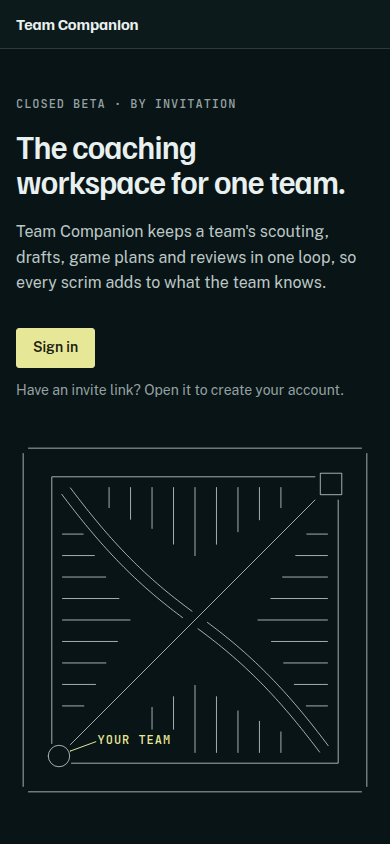

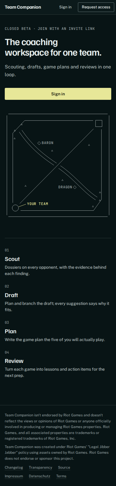
Closed beta
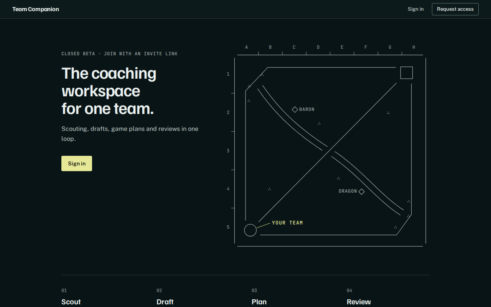
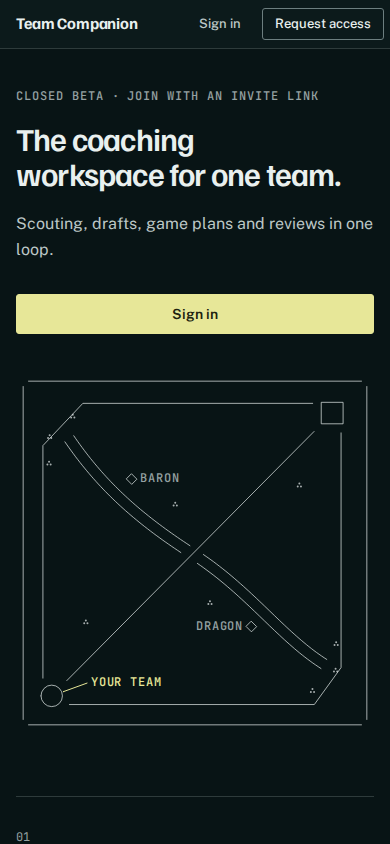
Share
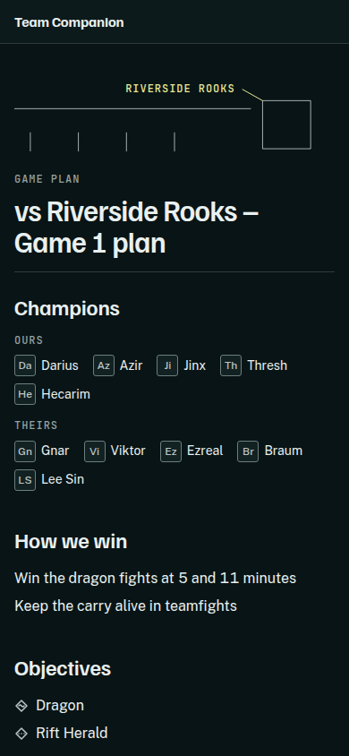
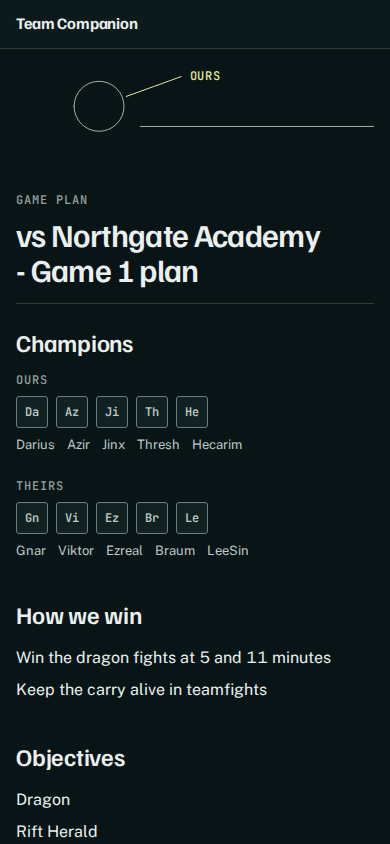
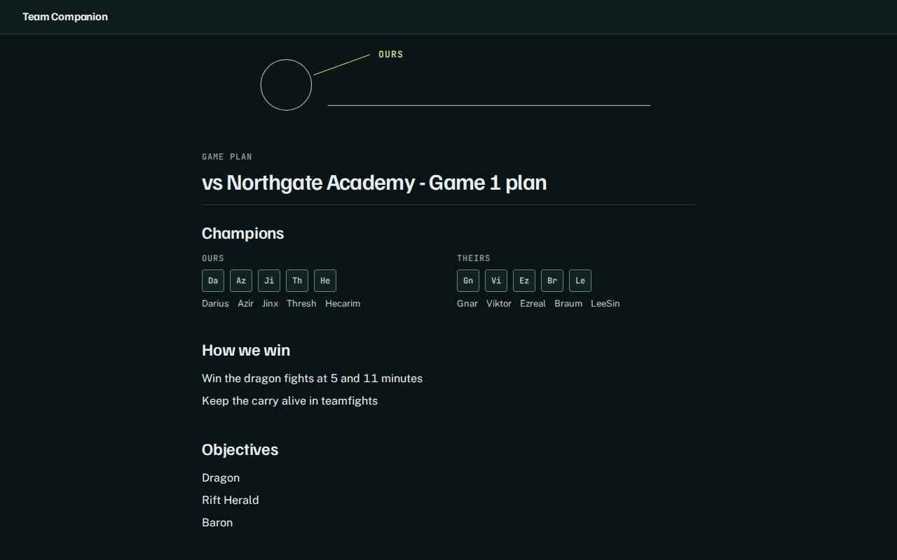
Match Day (main → R1)
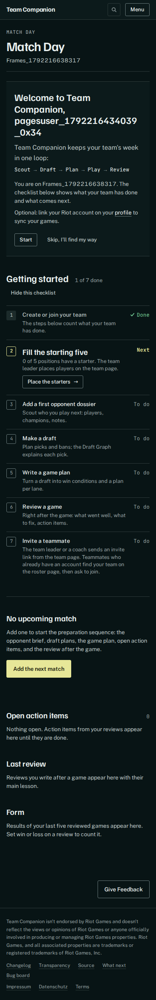
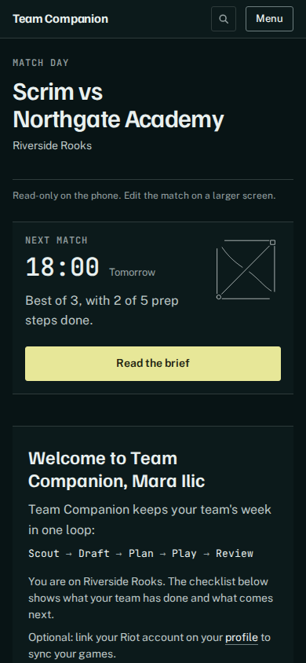
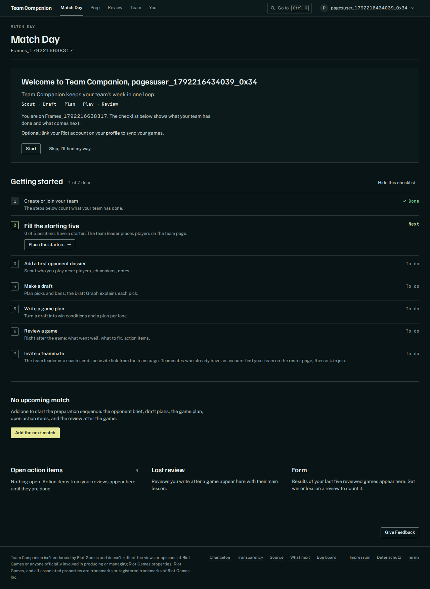

Role icons and the survey Rift
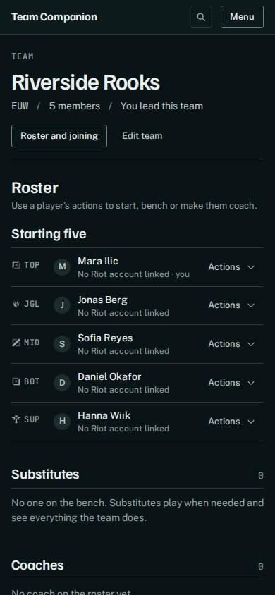
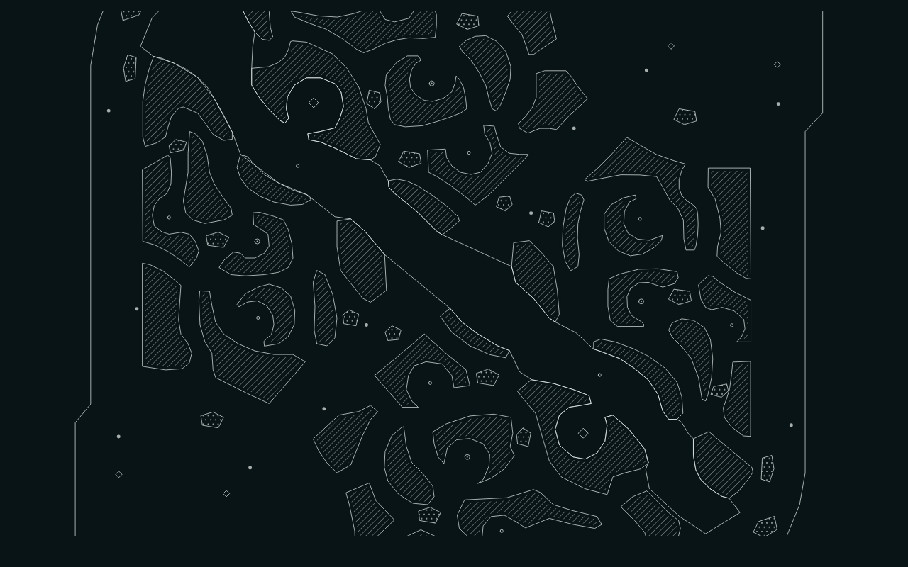
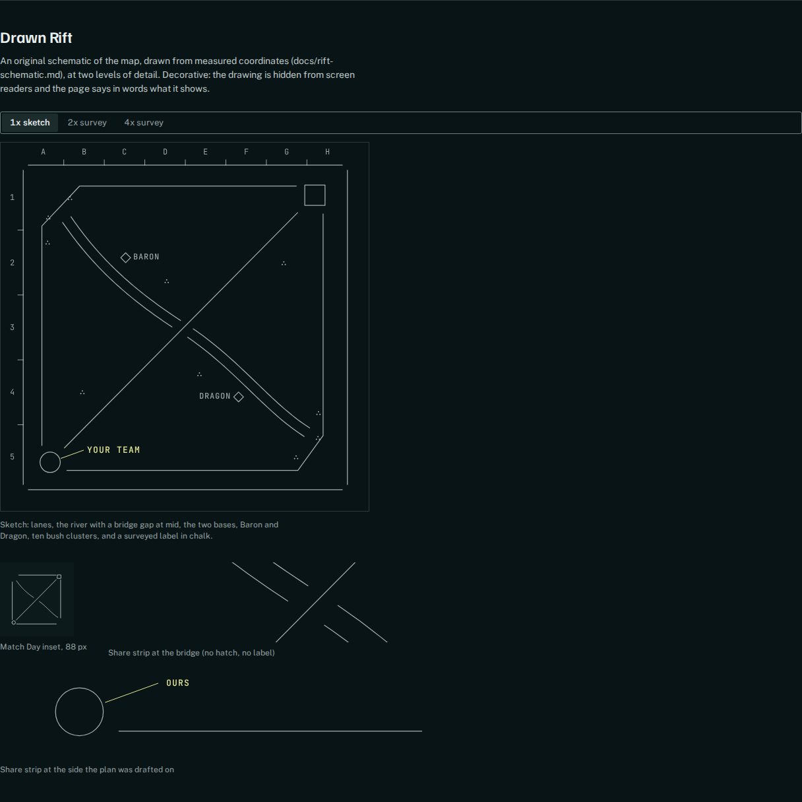
Link previews (1200×630)
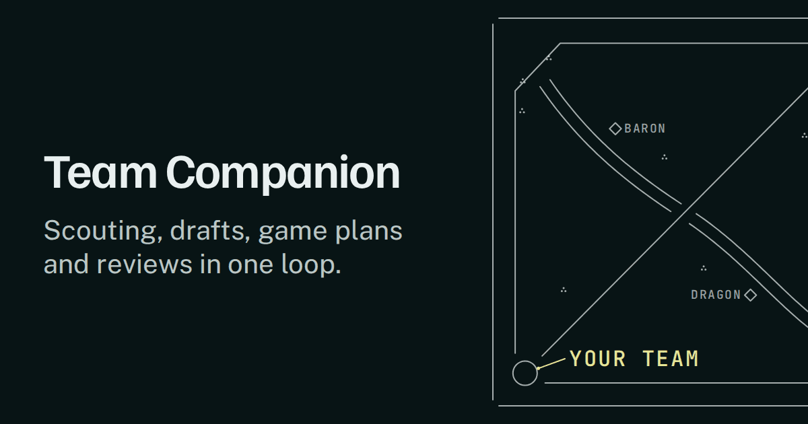
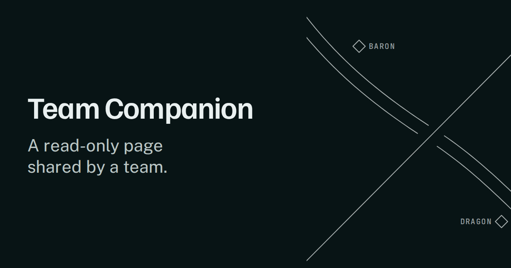
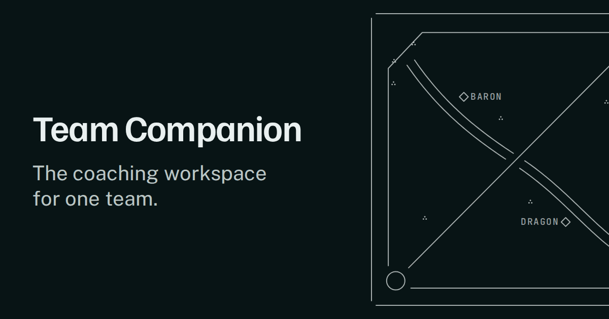